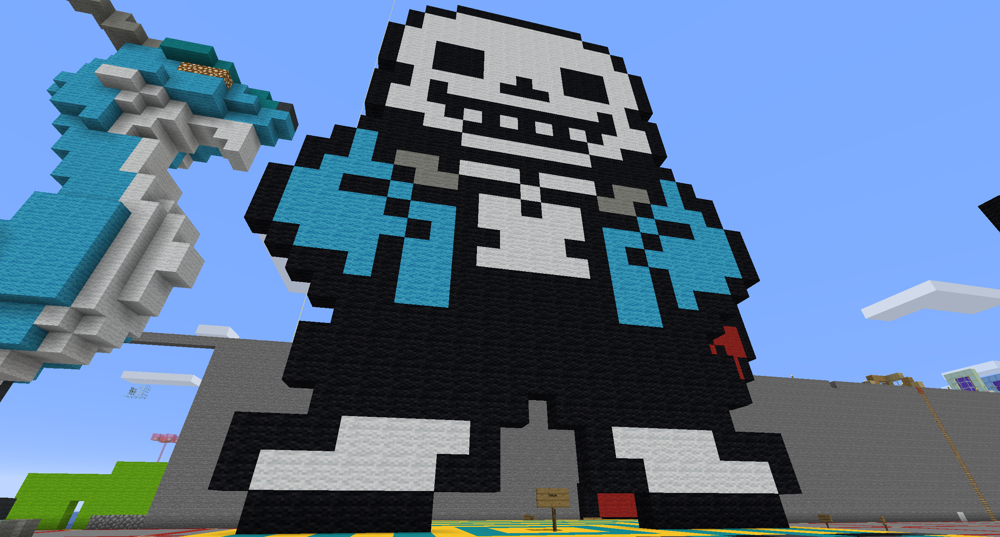
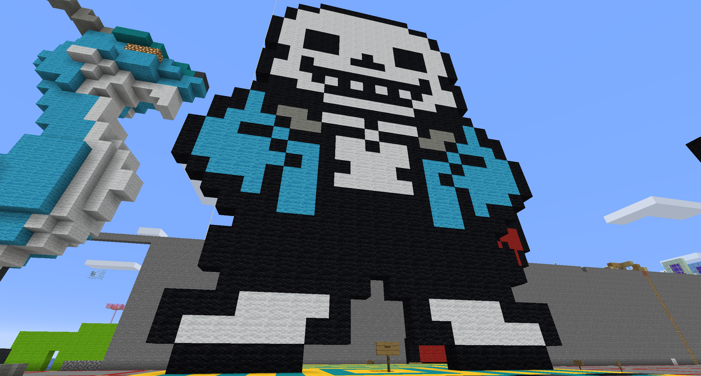

Minecraft Art of Sans from the 2015 game "Undertale"
=======Minecraft Art of Sans from the 2015 game "Undertale". I chose sans and, specifically, undertale because of how much I feel this game has impacted the internet and internet culture.
After its initial release in 2015, it garnered widespread acclaim for its nostalgic feeling yet humorous writing. The writing holds up well in today's culture as well, being quite
progressive for the time while also humorous in a way that is understood today. The character of sans has remained a pop culture icon for years, even reaching meme status.
>>>>>>> parent of d15a924 (gdfs)